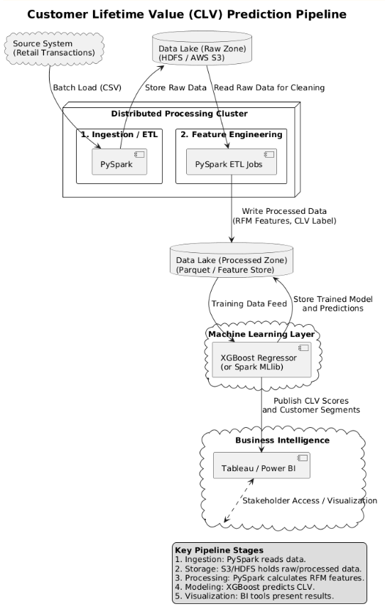

A Big Data & Machine Learning Pipeline for Customer Lifetime Value Prediction in Retail
View ReportThis use case is critical because it allows the business to move beyond treating all customers equally, instead focusing efforts on those identified as the most valuable.
We selected Customer Lifetime Value (CLV) Prediction from the retail analytics domain.
The aim is to use data analysis to identify high-value customers by predicting their future spending patterns.
Prediction enables targeted marketing offers, prioritized sales efforts, and proactive customer service to improve retention for key customers.
Design a scalable pipeline that converts raw transaction history into a predicted numerical CLV score for each customer.
The chosen dataset is Online Retail II, a publicly available, real-world transactional dataset well-suited for a big data application.
It contains detailed transaction records from a UK-based online retail store. Its large volume makes it ideal for calculating RFM metrics (Recency, Frequency, Monetary Value) necessary for CLV prediction.
View Kaggle DatasetWe are designing a robust, scalable pipeline suitable for large, transactional data that facilitates subsequent machine learning tasks.
Batch processing using Apache Spark to load raw CSV files from HDFS or AWS S3 (distributed reading).
Raw data in HDFS/S3 (Data Lake). Processed, aggregated data in Parquet columnar format for optimized reading speed.
Distributed ETL using PySpark. Includes cleaning (removing missing IDs, negative values) and aggregating data to create RFM features.
Training regression models (primarily XGBoost Regressor) on feature-engineered data, with Linear Regression as a baseline.
Dashboards using Tableau or Power BI to present CLV predictions and customer segments for stakeholders.
Full Architectural Diagram is included in the Appendix of the PDF submission.
Recommended Model: XGBoost Regressor (Gradient Boosted Decision Tree)
Justification:
Data is structured, multivariate, and time-series in nature, requiring time-based feature calculation and modeling.
The target CLV variable is highly imbalanced and right-skewed. This is handled effectively by XGBoost.
Raw data is low-dimensional, but feature engineering creates a medium-dimensional dataset (15-25 features).
1. LOAD raw transaction data into a PySpark DataFrame.
2. CLEAN data: Remove canceled invoices, missing CustomerID, or invalid values.
3. CREATE customer-level features: Group by CustomerID and compute RFM features.
4. DEFINE TARGET (CLV): Calculate future total spend as the CLV label.
5. PRE-PROCESS: Apply One-Hot Encoding and StandardScaler to features.
6. SPLIT the feature set into training (80%) and testing (20%) sets.
7. TRAIN the main model: Fit the XGBoost Regressor on the training set.
8. EVALUATE model: Predict CLV on the test set and calculate evaluation metrics.
9. INTERPRET results: Analyze feature importance from XGBoost.
10. DEPLOY: Save the final trained model for production use.
Since CLV is a regression problem, metrics that measure the error magnitude in currency terms are required.
Root Mean Squared Error. It is the most critical metric because it heavily penalizes large prediction errors. Minimizing large errors on high-value customers is the top business priority.
Mean Absolute Error. Provides an easily interpretable average error in currency units, useful for business reporting.
R-squared (Coefficient of Determination). Explains the percentage of variance in customer value that the model accounts for.
This proposal details a comprehensive, scalable Customer Lifetime Value prediction solution utilizing a PySpark-based pipeline and the high-performance XGBoost Regressor. The focus on robust feature engineering (RFM) and the critical evaluation metric of RMSE ensures the resulting model is highly accurate and directly supports strategic business decisions.
Accurate, Scalable, Business-Oriented CLV Prediction Pipeline